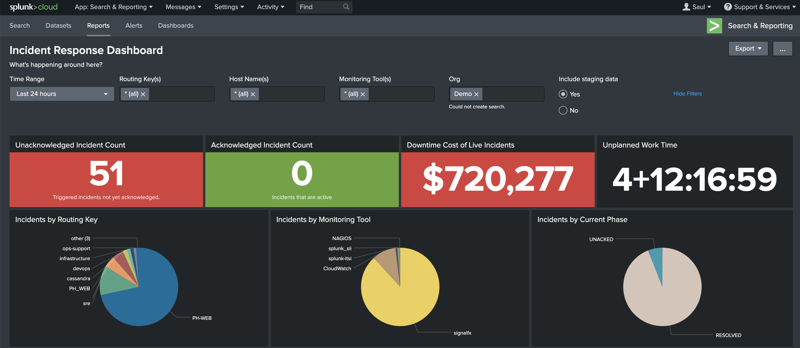

Chapter 1: Introduction to Splunk Log Analysis

Abstract:
Lab 3 of the SecureNuclei Homelab project introduces users to the world of log analysis using Splunk, a powerful platform renowned for its capability in managing and analyzing vast amounts of log data. In this lab, participants embark on a comprehensive journey from the
installation and configuration of Splunk to advanced log analysis techniques and dashboard creation.
The lab begins with a foundational understanding of Splunk's significance in cybersecurity, highlighting its role in detecting and responding to security incidents effectively. Participants are then guided through the installation process, meticulously configuring Splunk to suit their homelab environment's needs. Subsequently, they delve
into the intricacies of log ingestion, mastering the art of parsing and indexing data from diverse sources.
Objective of Lab 2: Lab 3 aims to equip users with a solid understanding of Splunk's capabilities and functionalities in log analysis, laying the foundation for their practical implementation in subsequent exercises and real-world scenarios.
Definition of Splunk: Splunk is a powerful and versatile platform designed for analyzing, monitoring, and visualizing machine-generated data, including logs, events, and metrics. It provides a centralized solution for collecting, indexing, and searching vast amounts of data in real-time.
Importance of Log Analysis in Cybersecurity: Log analysis plays a crucial role in cybersecurity by enabling organizations to detect and respond to security threats effectively. Logs contain valuable information about system activities, user actions, and network traffic, which can be analyzed to identify security incidents, anomalies, and potential breaches.
Chapter 2: Install and Configure Splunk
System Requirements for Splunk Installation:
Hardware Requirements:
CPU: Dual-core 2.0 GHz or higher (quad-core recommended for production environments)
RAM: 8 GB minimum (16 GB or higher recommended for production environments)
Storage: At least 20 GB of free disk space for the Splunk software installation. Additional disk space required for indexed data storage, depending on data volume and retention requirements.
Operating System Compatibility:
Windows: Windows Server 2012 or later, Windows 10, Windows 8.1, Windows 7 (64-bit)
Linux: CentOS, Red Hat Enterprise Linux, Ubuntu, Debian (64-bit)
macOS: macOS 10.12 or later
Software Dependencies:
Python: Splunk requires Python 2.7.x or Python 3.7.x for certain functionalities. Ensure Python is installed and configured properly on the system.
Supported Database: If using Splunk DB Connect or other database-related features, ensure compatibility with the supported databases such as MySQL, PostgreSQL, or Microsoft SQL Server.
Installation:
Windows:
- Download Splunk: Go to the Splunk website and download the appropriate installer for Windows.
- Run the Installer: Double-click the downloaded installer file to start the installation process.
- Follow Installation Wizard: Follow the prompts in the installation wizard. You can choose the installation directory and other settings during the process.
- Start Splunk: After the installation is complete, Splunk should start automatically. If not, you can manually start it from the Start menu.
- Access Splunk Web: Open a web browser and go to http://localhost:8000 to access the Splunk Web interface. Follow the on-screen instructions to set up your Splunk instance.
Linux:
- Download Splunk: Go to the Splunk website and download the appropriate installer for Linux.
-
Extract the Archive: After downloading, extract the downloaded archive to a location of your choice. You can use the following command in the terminal:
tar -xvf splunk-version.tgz -
Change Directory: Navigate to the directory where Splunk was extracted using the following command:
cd splunk -
Start Splunk: Run Splunk with the following command:
./bin/splunk start - Access Splunk Web: Open a web browser and go to http://localhost:8000 to access the Splunk Web interface. Follow the on-screen instructions to set up your Splunk instance.
macOS:
- Download Splunk: Go to the Splunk website and download the appropriate installer for macOS.
- Mount the Disk Image: Double-click the downloaded disk image file to mount it.
- Drag Splunk to Applications: Drag the Splunk application icon to the Applications folder to install it.
-
Start Splunk: Open a terminal and navigate to the Splunk bin directory using the following command:
cd /Applications/Splunk/bin -
Run Splunk: Start Splunk with the following command:
./splunk start - Access Splunk Web: Open a web browser and go to http://localhost:8000 to access the Splunk Web interface. Follow the on-screen instructions to set up your Splunk instance.
Note: These system requirements are for installing and running Splunk standalone instances. For distributed deployments or Splunk Enterprise Security deployments, additional hardware and network considerations may apply. It's recommended to refer to the official Splunk documentation for detailed system requirements based on specific deployment scenarios and use cases.
Chapter 3: Ingest Log Data into Splunk

Understanding Log Data Ingestion:
Log data ingestion refers to the process of collecting and indexing log data from various sources into Splunk for analysis and monitoring. It is a critical step in Splunk's data lifecycle, enabling organizations to leverage log data for insights into system performance, security incidents, and operational trends.
Procedure:
-
Install Splunk Forwarder:
- Download the appropriate Splunk Universal Forwarder or Splunk Forwarder package for your operating system.
- Install the forwarder using the provided installer.
-
Configure Inputs:
- Edit the
inputs.conffile located in the$SPLUNK_HOME/etc/system/local/directory. - Add stanzas to monitor log files or directories. For example:
[monitor:///path/to/log/file.log] sourcetype = my_sourcetype - Restart the Splunk Forwarder to apply the configuration changes.
- Edit the
Using Splunk HTTP Event Collector (HEC)
-
Enable HEC:
- Navigate to Settings > Data Inputs in the Splunk Web interface.
- Click on HTTP Event Collector and enable it.
-
Create a New Token:
- Click on New Token to generate a new token.
- Configure settings such as source type, index, and other optional parameters.
- Copy the generated token.
-
Send Data Using cURL:
- Use cURL or any HTTP client to send data to the HEC endpoint. Replace
YOUR_HEC_TOKENwith the actual token.curl -k https://localhost:8088/services/collector/event -H "Authorization: Splunk YOUR_HEC_TOKEN" -d '{"event": "your log data"}'
- Use cURL or any HTTP client to send data to the HEC endpoint. Replace
Manual Upload
-
Navigate to Splunk Web Interface:
- Log in to the Splunk Web interface.
-
Add Data:
- Go to Settings > Add Data.
-
Upload Files:
- Choose the option to upload files.
- Select the log files you want to upload and follow the on-screen instructions.
Using Splunk Connect for Syslog (SC4S)
- Follow the installation instructions provided in the SC4S documentation.
- Configure SC4S:
- Edit the SC4S configuration file to specify input sources, output destinations, and other settings.
- Start the SC4S service to begin ingesting syslog data into Splunk.
Chapter 4: Search and Analyze Log Data

Introduction to Search and Analysis:
Splunk's search and analysis capabilities are pivotal in extracting actionable insights from vast amounts of log data. By effectively querying and analyzing log data, users can identify security threats, troubleshoot issues, and gain operational insights crucial for decision-making.
Splunk Log Analysis Guide
Step 1: Log in to Splunk Web Interface:
Open a web browser and navigate to the Splunk Web interface URL. Log in with your username and password.
Step 2: Access Search & Reporting:
Once logged in, you'll land on the Splunk Home screen. Click on "Search & Reporting" in the top navigation bar to access the search interface.
Step 3: Construct a Search Query:
In the search bar at the top of the page, enter your search query using the Splunk Search Processing Language (SPL). For example:
index=my_index sourcetype=my_sourcetype "keyword"Step 4: Run the Search:
After entering your search query, press Enter or click the "Search" button to execute the search.
Step 5: Review Search Results:
Splunk will display the search results in the main panel. Each event matching your search criteria will be listed, showing relevant fields and metadata.
Step 6: Refine Your Search:
Refine your search by adding additional search terms, filters, or modifiers to narrow down the results. Use SPL commands like stats, eval, timechart, where, top, etc.
Step 7: Create Visualizations:
Use the Visualization tab to create charts, graphs, tables, and other visualizations based on your search results. Choose the appropriate visualization type and configure settings.
Step 8: Save or Share Results:
Save your search query as a saved search for future reference. Share your results or visualizations with colleagues by exporting them or generating a report.
Step 9: Learn SPL:
Familiarize yourself with the Splunk Search Processing Language (SPL) to take full advantage of Splunk's capabilities. Refer to Splunk's documentation and tutorials.
Step 10: Explore Apps and Add-ons:
Explore Splunk apps and add-ons available in Splunkbase to extend functionality for specific use cases.
Summary:
Splunk is a powerful platform for log analysis that enables organizations to extract valuable insights from log data to improve operational efficiency, security, and decision-making. The process begins with installing and configuring Splunk on various operating systems like Windows, Linux, and macOS. Once installed, log data is ingested into Splunk using methods such as Splunk Forwarders for distributed sources, HTTP Event Collector (HEC) for HTTP/HTTPS data, manual upload, or Splunk Connect for Syslog (SC4S) for syslog data.
After ingesting data, users can search and analyze log data using the Splunk Search Processing Language (SPL). They can construct search queries to filter and analyze log data, review search results, refine searches with additional terms and commands, and create visualizations to present data insights. Saved searches and reports facilitate future reference and collaboration.
This integrated process allows organizations to harness the full potential of Splunk for log analysis, enabling them to gain actionable insights and make informed decisions based on their log data.